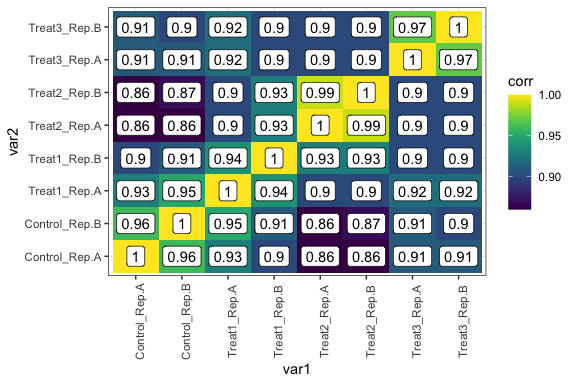
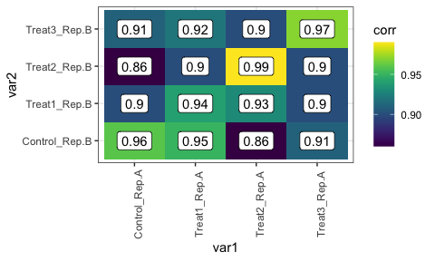
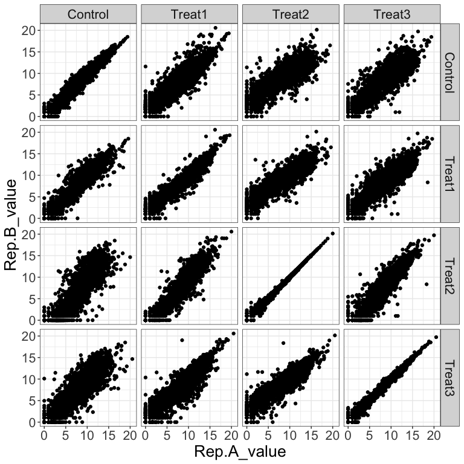
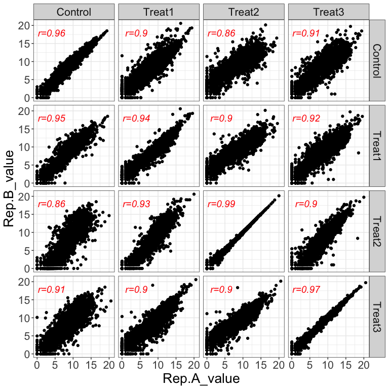
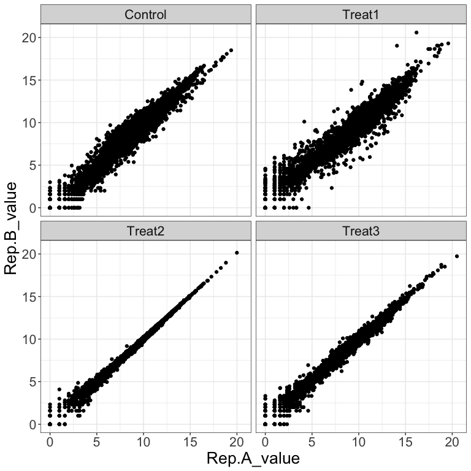
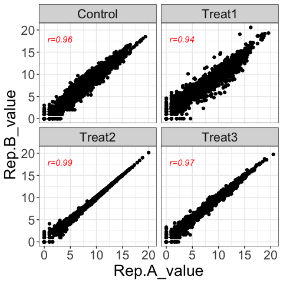

Motivation
Genomics data often stored in a matrix like format, where each row is a feature (gene, transcript, protein etc.) and columns are variables (e.g. signal intensity of experiments such as RNA-seq, ChIP-seq, Pol-II ChIP-seq etc.). Variables are often grouped by replicates, time-points or specific experimental conditions such as wild type, deletion, control, treatment etc. In such a multidimensional data, plotting a x-y scatter plot between different groups require lots of data wrangling before it goes for final ggplot.
corplot has functions to generate heatbox and pairwise scatter plots directly from feature matrix given in a tbl format. Let’s have a look into required input data and resultant plots out of corpot.
Install
if(require("devtools")){ devtools::install_github("cparsania/corplot") } else{ install.packages("devtools") devtools::install_github("cparsania/corplot") }
All samples vs all samples
expr_mat_file <- system.file("extdata" ,"example_data_expr_mat_01.txt" , package = "corplot") expr_mat <- readr::read_delim(expr_mat_file , delim = "\t") expr_mat #> # A tibble: 6,338 x 9 #> gene_name Control_Rep.A Control_Rep.B Treat1_Rep.A Treat1_Rep.B Treat2_Rep.A #> <chr> <dbl> <dbl> <dbl> <dbl> <dbl> #> 1 C1_00010… 1 0 1 2.81 5.13 #> 2 C1_00020… 9.65 9.32 9.15 9.32 10.9 #> 3 C1_00030… 5.46 4.70 4.64 5.36 6.15 #> 4 C1_00040… 10.9 10.5 11.4 12.2 11.3 #> 5 C1_00050… 0 1 1 5.88 5.43 #> 6 C1_00060… 13.4 13.0 12.9 13.1 13.2 #> 7 C1_00070… 12.9 12.7 12.6 12.2 11.2 #> 8 C1_00080… 10.4 9.81 10.2 9.96 10.4 #> 9 C1_00090… 7.33 6.61 6.13 6.88 7 #> 10 C1_00100… 10.0 10.1 10.9 10.9 10.8 #> # … with 6,328 more rows, and 3 more variables: Treat2_Rep.B <dbl>, #> # Treat3_Rep.A <dbl>, Treat3_Rep.B <dbl> ## calculate pairwise correlation cor_tbl <- corplot::get_pairwise_cor_tbl(expr_mat , var = "gene_name" , method = "pearson") cor_tbl #> # A tibble: 64 x 3 #> var1 var2 corr #> <chr> <chr> <dbl> #> 1 Control_Rep.A Control_Rep.A 1 #> 2 Control_Rep.B Control_Rep.A 0.96 #> 3 Treat1_Rep.A Control_Rep.A 0.93 #> 4 Treat1_Rep.B Control_Rep.A 0.9 #> 5 Treat2_Rep.A Control_Rep.A 0.86 #> 6 Treat2_Rep.B Control_Rep.A 0.86 #> 7 Treat3_Rep.A Control_Rep.A 0.91 #> 8 Treat3_Rep.B Control_Rep.A 0.91 #> 9 Control_Rep.A Control_Rep.B 0.96 #> 10 Control_Rep.B Control_Rep.B 1 #> # … with 54 more rows cp <- corplot::get_corr_heat_box(cor_tbl,var1 = var1, var2 = var2 ,value = corr) cp + viridis::scale_fill_viridis() + ggplot2::theme(axis.text.x = ggplot2::element_text(angle=90))

Group by replicates
All samples vs all samples correlation heatbox has redundant samples on each axis. This makes plot less readable. Alternate way to overcome this is to plot samples of replicate 1 vs samples of replicate 2.
cor_tbl2 <- cor_tbl %>% dplyr::filter(grepl("Rep.A", var1) ) %>% dplyr::filter(grepl("Rep.B", var2) ) cor_tbl2 #> # A tibble: 16 x 3 #> var1 var2 corr #> <chr> <chr> <dbl> #> 1 Control_Rep.A Control_Rep.B 0.96 #> 2 Treat1_Rep.A Control_Rep.B 0.95 #> 3 Treat2_Rep.A Control_Rep.B 0.86 #> 4 Treat3_Rep.A Control_Rep.B 0.91 #> 5 Control_Rep.A Treat1_Rep.B 0.9 #> 6 Treat1_Rep.A Treat1_Rep.B 0.94 #> 7 Treat2_Rep.A Treat1_Rep.B 0.93 #> 8 Treat3_Rep.A Treat1_Rep.B 0.9 #> 9 Control_Rep.A Treat2_Rep.B 0.86 #> 10 Treat1_Rep.A Treat2_Rep.B 0.9 #> 11 Treat2_Rep.A Treat2_Rep.B 0.99 #> 12 Treat3_Rep.A Treat2_Rep.B 0.9 #> 13 Control_Rep.A Treat3_Rep.B 0.91 #> 14 Treat1_Rep.A Treat3_Rep.B 0.92 #> 15 Treat2_Rep.A Treat3_Rep.B 0.9 #> 16 Treat3_Rep.A Treat3_Rep.B 0.97 corplot::get_corr_heat_box(cor_tbl2,var1 = var1, var2 = var2, value = corr) + viridis::scale_fill_viridis()

Group by replicates : All combinations
groups_file <- expr_mat_file <- system.file("extdata" ,"example_data_01_sample_groups.txt" , package = "corplot") groups <- readr::read_delim(file = groups_file,delim = "\t") groups #> # A tibble: 8 x 3 #> samples condition repl #> <chr> <chr> <chr> #> 1 Control_Rep.A Control Rep.A #> 2 Control_Rep.B Control Rep.B #> 3 Treat1_Rep.A Treat1 Rep.A #> 4 Treat1_Rep.B Treat1 Rep.B #> 5 Treat2_Rep.A Treat2 Rep.A #> 6 Treat2_Rep.B Treat2 Rep.B #> 7 Treat3_Rep.A Treat3 Rep.A #> 8 Treat3_Rep.B Treat3 Rep.B csp <- corplot::get_pair_wise_scatter(dat_tbl = expr_mat, group_tbl = groups,var_plot = condition, var_plot_group = repl,dat_id = gene_name) csp

Display corr value
cor_tbl2 <- cor_tbl %>% dplyr::rename(`Rep.A`=var1, `Rep.B` = var2) %>% dplyr::filter(grepl("Rep.A" ,`Rep.A`)) %>% dplyr::filter(grepl("Rep.B" ,`Rep.B`)) %>% TidyWrappers::tbl_replace_string("_.*" , "") cor_tbl2 #> # A tibble: 16 x 3 #> Rep.A Rep.B corr #> <chr> <chr> <dbl> #> 1 Control Control 0.96 #> 2 Treat1 Control 0.95 #> 3 Treat2 Control 0.86 #> 4 Treat3 Control 0.91 #> 5 Control Treat1 0.9 #> 6 Treat1 Treat1 0.94 #> 7 Treat2 Treat1 0.93 #> 8 Treat3 Treat1 0.9 #> 9 Control Treat2 0.86 #> 10 Treat1 Treat2 0.9 #> 11 Treat2 Treat2 0.99 #> 12 Treat3 Treat2 0.9 #> 13 Control Treat3 0.91 #> 14 Treat1 Treat3 0.92 #> 15 Treat2 Treat3 0.9 #> 16 Treat3 Treat3 0.97 csp + ggplot2::geom_text(data = cor_tbl2, x = 4, y = 18, ggplot2::aes(label = paste("r","=",corr , sep = "")) , fontface="italic" , col = "red",size = 5)

Group by replicates : Only replicate pairs
csp2 <- corplot::get_pair_wise_scatter(dat_tbl = expr_mat, group_tbl = groups,var_plot = condition, var_plot_group = repl,dat_id = gene_name,view_matrix = FALSE) csp2

Display corr value
cor_tbl3 <- cor_tbl2 %>% dplyr::filter(`Rep.A` == `Rep.B`) csp3 <- corplot::get_pair_wise_scatter(dat_tbl = expr_mat, group_tbl = groups,var_plot = condition, var_plot_group = repl,dat_id = gene_name,view_matrix = FALSE) csp2 + ggplot2::geom_text(data = cor_tbl3, x = 3, y = 18, ggplot2::aes(label = paste("r","=",corr , sep = "")) , fontface="italic" , col = "red")
